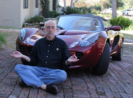
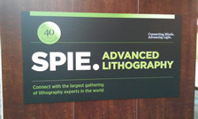
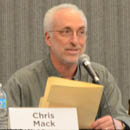
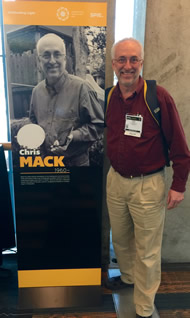

- Home |
- Blog |
- Lithography |
- Published Works |
- For Profit |
- About Chris
- | Gentleman
- | Scientist

San Jose, California, February 22– 26, 2015
(The following diary appeared first as a daily blog at http://life.lithoguru.com/ and is reproduced here in a slightly edited form.)
SPIE Advanced Lithography 2015 – day 0
2015 is the International Year of Light (light2015.org) and it has gotten me thinking about anniversaries. Two hundred years ago Fresnel developed his diffraction theory, 150 years ago Maxwell finished his electrodynamics, 100 years ago Einstein published his General Relativity, and 50 years ago Gordon Moore wrote an article that gave birth to Moore’s Law (and lithographers have not been the same since). SPIE itself was begun in 1955 and so is celebrating its 60 th birthday, and this is the 40 th time the Advanced Lithography symposium has met. It is a year of personal anniversaries as well. Thirty years ago I gave my first paper at this conference, 25 years ago I start FINLE Technologies, released the first commercial version of PROLITH, and had my first bathtub party at this conference, 15 years ago I sold FINLE to KLA-Tencor, and 10 years ago I retired into the life of a Gentleman Scientist. Is there anything special in store for 2015 in the world of lithography? We will have to see.
Here are some of the things that I’m hoping to learn this year.
Directed Self-Assembly (DSA): Is it in manufacturing yet? Will it be this year?
Nanoimprint Lithography (NIL): Will Toshiba put it into manufacturing this year?
3D Flash: Will it ramp this year? Will someone other than Samsung announce production?
Extreme Ultraviolet (EUV): Will we reach 100W by the end of the year?
I expect the announcement from ASML to be that they’ve already achieved more than 100W, but we have to listen closely for the details. A bench demonstration is important, but what I look for is demonstrations at a customer site. Alas, the first paper that ASML will give on this topic, Tuesday morning at 8am, is at the same time as a paper I am giving, so I won’t be able to attend. Maybe one or two of my loyal readers could send me their impressions (if they choose to attend the EUV session instead of my talk!).
TheBet. Six years ago at this conference I made a bet with Vivek Bakshi about when (or if) EUV would be used in manufacturing. Apparently, after having a bit too much to drink, I bet my Lotus that EUV would not be ready for manufacturing by the end of 2014. Well, it’s 2015. Who won the bet? Let’s just say I still have my Lotus. For a complete telling of the story, go here: http://www.lithoguru.com/scientist/essays/thebet.html
I hope to see you in San Jose!
SPIE Advanced Lithography 2014 – day 1
If you walk through the crowds this year, you know the symposium is well attended. We have about 50 less papers this year than last, but about the same number of attendees – on the order of 1,700 technical attendees and another 800 or so who just come to the exhibits. Short course attendance was up about 25% from last year. A very healthy and dynamic conference.
We began our first day with the awards ceremony, and a very rare “career achievement” award. Andy Neureuther and Bill Oldham were acknowledged for their “career long contribution to the art and science of lithography” through their lithography modeling efforts at the University of California at Berkeley. Andy was a co-author of some of the original 1975 Dill papers (the most famous papers in lithography, in my opinion) and Andy and Bill, along with their students, published the SAMPLE simulator in 1979. Their SAMPLE group made numerous important contributions to lithography over the last 35 years, and of course the many great students they have graduated continue to multiply their influence. As Symposium Chair Mircea Dusa said, this work was a “defining moment, when lithography went from an art to a science.” The award was made “in deep appreciation for your 40 years of visionary guidance and dedication to SPIE society and lithography community.” Congratulations Andy and Bill!
Ralph Dammel, CTO of AZ Electronic Materials, was the recipient of the 12 th Frits Zernike award (full disclosure – I nominated him). I learned a tremendous amount from Ralph’s 1993 book on DNQ/Novolac resists, and learned to appreciate sweetbreads and German coffee when I visited him in Frankfurt about 25 years ago. A well-deserved award (for the lithography, not the sweetbreads).
We have five new Fellows of SPIE in our community as of Monday: Luigi Capodieci, Bernd Geh, Moshe Preil, Masato Shibuya, and Obert Wood. GlobalFoundries almost swept the ranks! Congratulations to all of you.
The plenary session was a mixed bag. Alan Willner gave a nice overview of the National Photonics Initiative, an “alliance” of industry, academia, and government that includes SPIE and that began in 2012. The goal of the NPI is to drive US investment in photonics (read: get the US government to spend more on photonics). Photonics, like many fields of science that border technology, seems to have a case of Moore’s Law envy.
The talk by Tsu-Jae King Liu of UC Berkeley was one of the best plenaries ever. With power as the current limiter of CMOS performance scaling, she proposed a couple of very innovative solutions. The use of micro-relays was especially intriguing. I’ll be following developments in that field going forward.
I have been out of corporate America too long to appreciate Xiaowei Shen’s final plenary talk on the “internet of things”. It was so full of IBM-speak that I could barely understand it.
When the regular conference talks began at 11am I had the familiar problem of wanting to be in multiple places at the same time. I missed more worthy talks than I attended. Gerg Yeric of ARM showed me how little I know about design-manufacturing interactions and how hard scaling is getting independent of lithography. He noted that when we shrink, some of the SRAM cells in logic designs are moving from 6 transistors to 8, 10, or even 18 transistors to store one bit in order to keep the cells both fast and reliable in the face of variability. It makes you wonder if cost per transistor is a useful metric to assess the value of shrinking.
Changmoon Lim of SK hynix gave a talk on challenges for EUV insertion into high-volume manufacturing (HVM), a perennial topic at this conference. The Hynix experience on the NXE:3100 EUV tool from ASML was about slow learning. The tool was installed in the summer of 2011 and over three years the throughput went from 2 wafers per hour (WPH) to 7 WPH, and tool availability went from 25% to 75%. Learning is picking up with the installation of their NXE:3300, though he gave little data. A 2xnm generation DRAM split lot with one layer printed on EUV produced comparable yield to 193i, but they had to use an exposure dose much higher than the goal of 20 mJ/cm2 to achieve that yield (when I asked, he wouldn’t tell me the exact dose used).
I missed Tony Yen’s talk about EUV progress at TSMC – I was busy giving a talk of my own. I’m told he described the very fast progress that source power has made in the last year, going from 20W to 40W, and more recently to 80W, installed on a TSMC tool. I also missed Todd Younkin of Intel and the idea of bottoms-up growth of metal vias next to cuts filled with dielectric to improve overlay. He told me later than much work remains on this idea, but it sounds very promising.
Toshiaki Ikoma, CTO of Canon, gave an overview of their new nanoimprint lithography (NIL) tool, claiming the tool was “now available” and that Canon “will be back to the leading lithography company again.” We’ll have to wait and see. And we’ll have to wait to see the data that support these claims during other NIL talks this week.
The day ended with a panel discussion on the metrology challenges of 3D devices. I was on the panel, but since I know nothing about the metrology challenges of 3D devices, I gave a speech on a different topic. You can find my speech here: http://www.lithoguru.com/scientist/essays/Metrology.html.
A general complaint about panel discussions: the standard format that we almost always use doesn’t work. We should abandon it. This format involves posing a number of momentous and difficult questions, and telling each panelist to prepare a 5 minute talk on those questions. Of course, the panelists use powerpoints (most of us are barely able to talk without powerpoint, and I suspect the audience is barely able to listen without powerpoint as well), and each one averages 10 minutes. Our scheduled 90 minute panel had only 30 minutes of audience questions at the end, but that was only because we went 20 minutes over the allotted time. Through no fault of the fine panelists on stage with me, it was a truly boring experience. How can we make panels better? Give the panelists at most one minute (and no slides) to make an introductory statement, or better yet no introductory statement. Then go right into questions, alternating between moderator and audience questions. Make sure it is fun, and not a mini conference session. Also, beer helps.
My favorite quote of the day: “Double patterning was thought to be a bridge between immersion and EUV, we just didn’t realize how long the bridge would be.” – Changmoon Lim, SK hynix
SPIE Advanced Lithography 2015 – day 2
It’s been a long time since a lithography conference was just about lithography. Last year TSMC gave a talk that described problems they were having with EUV lithography and ASML’s stock price went down 5%. Yesterday (Monday), Tony Yen of TSMC gave a talk describing very nice progress on source power and throughput and ASML’s stock price went up 5%. Is it a good thing that so many stock analysts attend these talks? It doesn’t help that ASML had a press release ready to go and sent it out just minutes after Tony had finished (Title: “ASML announces new high mark for EUV productivity; TSMC images more than 1000 wafers in a single day”). About half a dozen analyst blogs were crowing about the importance of what Tony said, one even counting the number of times he mentioned KLA-Tencor. This puts a lot of pressure on scientists and engineers giving technical talks to focus on things that aren’t technical, and that is pressure we do not want or need. I guess there is nothing to be done – it is just reality. But I don’t like it.
My Tuesday was far from such earth-shaking events. I buried myself deep in the rough landscape of stochastic resist response, line-edge roughness (LER), and how to measure noise. Fascinating, but don’t expect a stock analyst to be parsing any of my words on the topic. There were several attempts to simulate the impact of roughness on SEM linewidth measurement, with two important insights. Richard Lawson of Georgia Tech showed that roughness on a vertical feature sidewall produces SEM images that look just like smooth sidewalls that are sloped. There is a lot of information in an SEM image, but maybe less than we hope. My 8am paper was about how to extract the most information possible from an SEM image, and that our current measurement algorithms don’t take advantage of everything we know about how those images are generated. As I said Monday night, build better metrology. We desperately need it.
My third and last paper was Tuesday afternoon, where I gave a mathematical proof that post-lithography process smoothing techniques won’t work, at least not as well as we need them to. Like all mathematical proofs, its validity will depend on the validity of my assumptions. I hope that those who believe in the efficacy of post-process smoothing will design experiments that directly challenge those assumptions instead of just showing SEM images and reporting reduced three-sigma roughness numbers.
The conference is half-way done!
SPIE Advanced Lithography 2015 – day 3
When you walk into conference room 220A, it will be under the watchful eyes of the “lithography luminaries”. These life-size posters of people who have made out-sized contributions to lithography are part of SPIE’s celebration of the International Year of Light. Some are a sampling of the great scientists who contributed to optical science and technology: Lord Rayleigh, Ernst Abbe, Frits Zernike. The rest are a sampling (of course, incomplete) of folks who have contributed directly to semiconductor lithography. I’m proud (and a tad embarrassed) to be among them. And then someone pointed out the hyphen. I guess one should always be mindful of one’s mortality (Chris Mack, 1960 - …).
I spent the morning of day three learning about progress on directed self-assembly (DSA). Defectivity levels are below 1/cm2, a major milestone but still too high. DSA for contact hole shrinking and uniformity enhancement seems very close to mature enough for manufacturing. Is it ready? I wish that more manufactures were here giving papers talking about their progress in this and other areas. Samsung is conspicuous in its relative absence. On the other hand, Intel, a company that perennially listens more than it talks, is much better represented this year than in the past.
DSA for lines and spaces still needs work. It is interesting to see that line-edge roughness is one of the big problems for DSA, since we all thought that low LER would be one of its major advantages. It doesn’t help that its competitor is SAQP (self-aligned quadruple patterning), a technique with about the lowest LER possible. Comparisons of DSA to SAQP will determine if DSA is ready for manufacturing, both in terms of performance and cost. It is getting close. Dan Millward of Micron reported on Monday that it is only 10% away on the LER metrics.
I also heard some competing exercises comparing the impact on design of choosing SAQP or EUV for the 7nm node. Lars Liebmann showed some standard cells designed making assumptions about the restrictions that SAQP and EUV would impose, then found that routing would be impacted the most, with EUV having an area advantage. Julien Ryckaert of Imec should that a clever introduction of an extra middle of the line (MOL) metal layer, as well some other optimizations, could eliminate the area penalty of using SAQP. The Liebmann and Ryckaert studies were complimentary, and more of these exercises are certainly necessary to understand the impact of lithography on 7nm-node design.
In the afternoon I heard about the progress of multi-electron beam tools. IMS Nanofabrication talked about the most promising application of multibeam writers: mask making. Their tool has made it through the alpha stage and they are hoping to have a production instrument in 2016 (despite having “Ready for Use” in the title of their talk). Mapper seems to continue its trend of pushing out their schedule by one year every year. Still, if they can demonstrate one wafer per hour in the next year or two, that will be a major milestone worth celebrating. The REBL program was dropped by KLA-Tencor in the past year, but it seems that TSMC has not given up on it. It will be interesting to see if TSMC can find another supplier to pick up that technology.
At the poster session I was very pleased to see the posters much more spread out than in years past – thank you SPIE! It was very pleasant to mingle and talk to authors with an adequate amount of room.
After a sampling of wonderful hospitality suites (thanks to the vendors who let me in despite that I will never buy their products), I ended the evening at the PROLITH party. It was 30 years ago that I gave my first talk at this conference (“PROLITH: a comprehensive optical lithography model”). Of course, I had no idea that this paper would have such a momentous impact on my life. It has been a great 30 years, and I am grateful for all the friends I have made in this community. It was also 30 years ago that I held the first bathtub party. (If you don’t know what that means, you can read some of my past blogs from this conference here). I was very glad to end the evening carrying my 30 th anniversary PROLITH beer glass.
SPIE Advanced Lithography 2015 – day 4
On Thursday I was EUV focused. My first complaint is that there were too many ASML papers. Of course, this is not ASML’s fault. They are doing most of the important work in this field. Still, some sessions started to feel like an ASML meeting rather than an SPIE meeting.
The first session was directed to high numerical aperture (NA) designs for EUV, and the ASML/Zeiss anamorphic imaging approach looks like a good idea. Current lens designs can’t scale to NA > 0.5 because they result in angles hitting the mask on the order of 9° rather than the current 6°. These higher angles degrade imaging performance, removing most of the advantage of the higher NA. Higher magnification (8X) would fix this, but would result in either much larger mask sizes (an unlikely scenario) or much smaller field sizes (1/4 to be specific). The smaller field size would hit EUV where it hurts most: throughput.
The Zeiss/ASML solution is to have an 8X magnification in the direction needed to lower the incident angles on the mask (the scan direction), keeping the magnification 4X in the slit direction. This results in field sizes 1/2 of the current size, a more manageable problem. And by moving to a design with a central obscuration, the angles on the mirrors are reduced as well, increasing mirror reflectivity and overall optics transmission. To keep the projector at six mirrors, the higher NA will require extreme aspheres, a daunting manufacturing challenge. But as Bernhard Kneer of Zeiss said, in perfect Teutonic style, “Zeiss can do this.” I love it.
I’m pleased to see ASML acknowledge that higher resolution will require higher dose for EUV. They projected a need for 60 mJ/cm2 for 8-nm half pitch. They are also beginning to grapple with the hard problem of stochastics, framing the issue as an overlay (or edge placement) problem rather than a CD control (LWR) problem. An afternoon talk by Jan Mulkens provided a scenario where edge placement errors caused by stochastics were about of equal magnitude as those caused by overlay errors. I agree that this is a very valuable way of looking at the problem.
I did manage to sneak out of the EUV sessions to visit the world of DFM (design for manufacturing) and hear Andrew Burbine of Mentor talk about the Akaike Information Criterion for evaluating model performance. Finally! I teach about this criterion, as well as other model evaluation criteria, in a statistics course I give at the University of Texas. It is quite standard practice in many fields of model calibration, and is taught as a best practice in most textbooks on the topic. It is good to see it come into the field of OPC model calibration. Kudos to Mentor. Now if they can just get their customers to think about such metrics, as well as 4-fold validation, as better judges of model quality than just RMS fit error.
I have a new award: for the talk with the best last-minute title change. From Imec,
Original title: “No More of Moore’s Law: the high cost of dimensional scaling”
New title: “Maintaining Moore’s Law: enabling cost-friendly dimensional scaling”
Do you think an angry boss might have been involved in this change of heart?
Here is my summary of the reported progress in EUV. ASML rolled out their 40W source to the NXE:3300s in the field last year, and it is now the standard source for most of those users. TSMC got the first 80W source late last year, and that tool is operating mostly as expected, but with only 55% availability. The result is about 40 wafers per hour using a 23.5 mJ/cm2 dose. Cymer has shown a bench source operating at 110W for one hour, but the much anticipated 250W source is still a long ways away. I suspect we’ll see a 100W source in the hands of a customer by the end of the year.
This is good progress. Is it enough? Everyone admits that EUV has missed the window for insertion at 10 nm (except maybe the investor relations team at ASML). What will it take to have EUV established as the plan of record for 7 nm? It will take even faster progress this year. I wish the hard working folks at ASML good luck.
Many people ask me what the most exciting or revolutionary idea was this year at SPIE. But that is not really the point. Sure, every now and then some really new idea seems to come out of nowhere and take off. I first mentioned in my 2010 conference blog that DSA was starting to look less like a science project and more like a technology. But it is the accumulation of progress on DSA over the last 5 years that is the real story. And this year is like most years: a year of incremental progress. Like Moore’s Law itself, where 50 years of incremental progress have resulted in revolutionary changes in capability, our incremental progress is best viewed as accumulated progress. We push hard every year, and over the years the change is absolutely remarkable. I enjoyed watching that progress reported here this week. And I’m sure I’ll enjoy it even more next year.
SPIE Advanced Lithography 2015 – Epilogue
I gave three talks at the SPIE Advanced Lithography Symposium, and I’ve spent a fair part of the following week finishing up the papers. As usual, they are available for download for anyone interested.
But I’ve done something different this year. I have, after the fact, recorded my presentations and uploaded them to YouTube. So, for anyone who missed my presentations and wants to hear what I have to say, you can find both the written papers and the talks here:
http://www.lithoguru.com/scientist/papers_recent.html
Chris Mack is a writer and lithographer in Austin, Texas.
© Copyright 2015, Chris Mack.
Diaries from other lithography conferences...